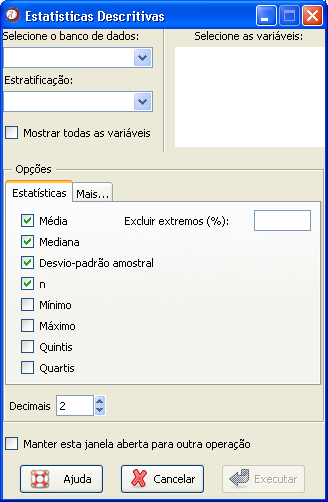
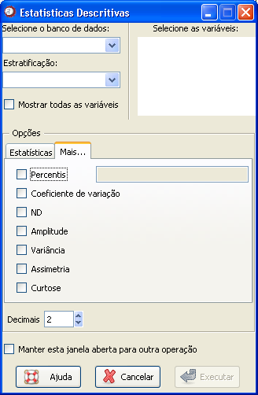

Medidas
Sumárias
Medidas
Sumárias
O caminho para essa função é: Análises
Nessa
janela é possível escolher quais estatísticas
devem ser calculadas e retornadas no campo "Saída de resultados"
da janela principal.
É possível escolher as medidas de
interesse que devem ser calculadas. No entanto, o padrão
é apresentar o N total e o ND (informações não disponíveis); e
calcular média,
mediana, variância, desvio-padrão e coeficiente de
variação.
|  (a) |
 (b) |
Figura 1. Janela "Estatísticas
descritivas" indicando todas as medidas que podem ser calculadas.
O primeiro passo é selecionar o banco de dados onde está a variável que se deseja descrever. Para isso, é necessário que o banco já tenha sido aberto (detalhes sobre como abrir dados ou importar dados via ODBC).
Em seguida, as variáveis numéricas aparecerão disponíveis na coluna "Selecione as variáveis". O usuário deverá selecionar uma ou mais variáveis.
Um item opcional da janela é a variável de estratificação.Quando o banco de dados é selecionado, as variáveis que podem ser utilizadas como fatores de estratificação aparecerão na guia "Variável de estratificação". É permitida a escolha de apenas uma variável de estratificação.
O Epi-R apresenta duas janelas com opções de estatísticas. As mais usadas estão denominadas como Estatísticas e são apresentadas na Figura 1(a). Algumas outras opções podem ser verificadas na aba "Mais...", como pode ser visto na figura 1(b).
Depois de selecionar todas as opções desejadas, basta clicar em "Executar". Para fazer sucessivas análises usando essa janela, marque a opção "Manter essa janela aberta para outra operação". Com isso, o resultado desejado aparecerá no campo "Saída de resultados" da janela principal do Epi-R, mas essa janela não será fechada, evitando o retrabalho de acessá-la.